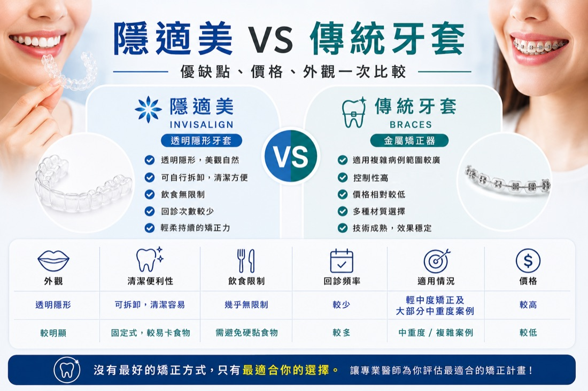
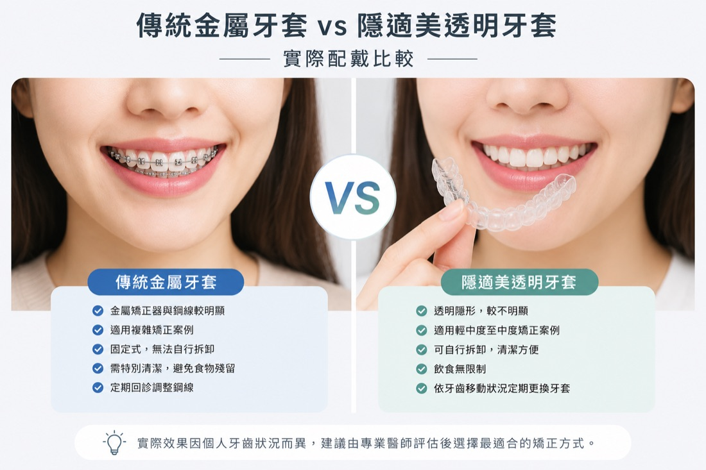
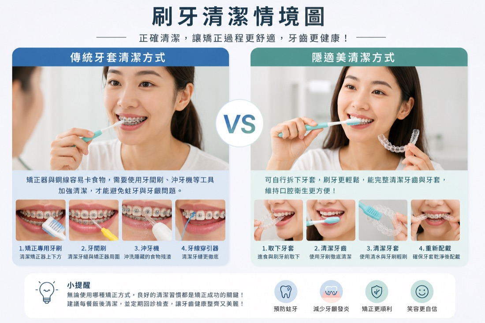
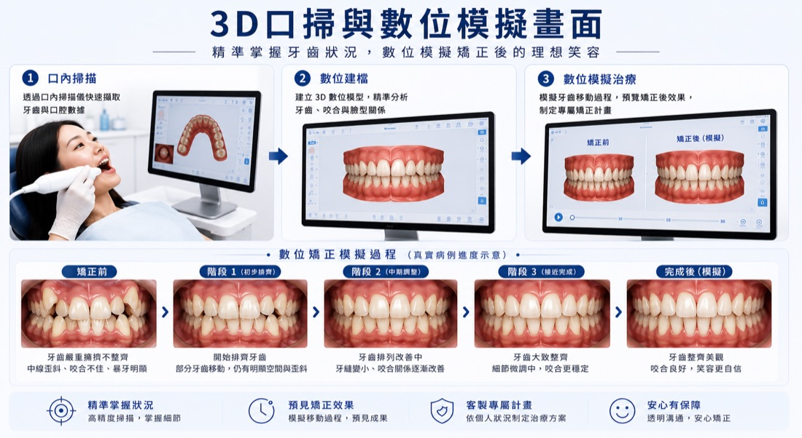
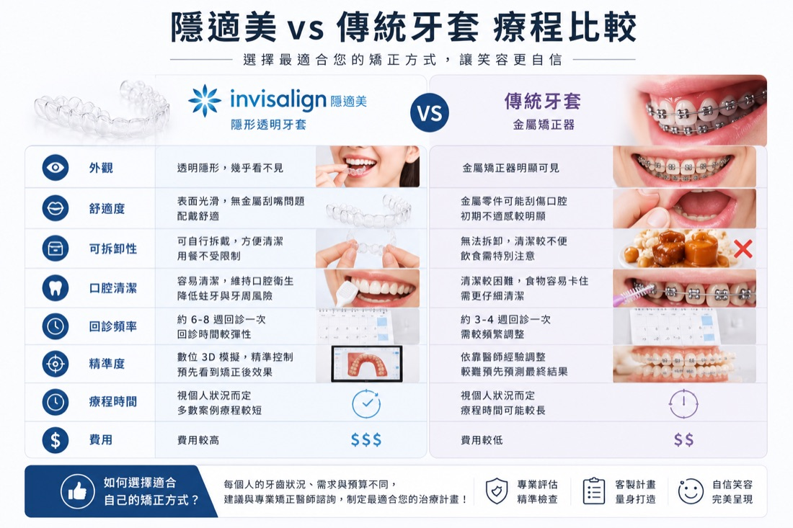

想了解台南隱適美與傳統牙套的差別，不能只看外觀或價格。兩種矯正方式在配戴方式、清潔便利性、飲食限制、療程安排與適用情況上各有不同。本文將逐項整理比較重點，協助您在諮詢前建立基本了解；實際選擇仍需由醫師依牙齒排列、咬合狀況與生活需求評估。

圖1：隱適美與傳統牙套優缺點、價格與外觀比較。隱適美是什麼？
隱適美（Invisalign）是一種透明牙套矯正系統，透過一系列客製化透明牙套，逐步移動牙齒位置，達到牙齒排列與咬合改善效果。
與傳統矯正不同的是，隱適美沒有金屬矯正器與鋼線，因此外觀較自然，也能自行拆卸。
傳統牙套是什麼？
傳統牙套是利用金屬矯正器與鋼線持續施力，慢慢調整牙齒排列與咬合。
目前常見的傳統矯正包含：
- 金屬牙套
- 陶瓷牙套
- 自鎖式牙套

台南隱適美與傳統牙套差在哪？5項重點比較
1. 外觀差異
隱適美最大的特色就是透明、不明顯。由於牙套貼合牙齒表面，多數人在日常對話時不容易察覺，因此受到許多上班族、學生與注重外觀族群歡迎。
而傳統牙套因為有金屬矯正器與鋼線，外觀相對明顯。
2. 舒適度差異
隱適美表面較平滑，通常較不容易磨破嘴巴與口腔黏膜。
而傳統牙套初期較容易出現嘴破、刮嘴、異物感與鋼線摩擦不適。
3. 清潔便利性差異
隱適美可以自行拆卸，因此吃東西與刷牙時較方便。
而傳統牙套因為矯正器固定在牙齒上，食物容易卡在鋼線與矯正器周圍，需要花更多時間清潔。

圖3：隱適美與傳統牙套日常刷牙清潔方式與便利性比較。4. 飲食限制差異
隱適美進食時可拆下，因此大部分食物都能正常食用。
但傳統牙套通常需要避免太硬或太黏食物，以免造成矯正器脫落。
5. 療程與回診安排差異
隱適美通常會搭配數位模擬技術與3D口掃，讓患者提前了解牙齒移動方向與預期成果。
部分患者回診頻率也可能較低。

圖4：透過3D口掃與數位模擬，預先了解牙齒矯正過程與預期效果。隱適美與傳統牙套哪一種比較適合？
沒有單一矯正方式適合所有人。選擇時通常需要考量牙齒排列與咬合問題、口腔清潔習慣、配戴配合度、外觀需求及醫師的療程規劃。隱適美與傳統牙套各有適用情況，仍需經口腔檢查與影像評估後說明。
隱適美跟傳統牙套哪個比較快？
矯正療程時間不能只依矯正器種類判斷，還會受到牙齒排列、咬合問題、治療複雜度、牙齒移動狀況及患者配合度影響。隱適美需要依照醫師指示維持足夠配戴時間，傳統牙套則需配合回診調整；實際療程時間仍應由醫師評估後說明。
如果想進一步了解影響療程長短的因素，可參考〈隱適美療程時間、每日配戴時數與影響因素〉。
隱適美與傳統牙套費用怎麼比較？
兩種矯正方式的費用會受到牙齒排列與咬合狀況、療程複雜度、治療時間、使用的矯正系統及相關治療需求影響，不能只依矯正器種類直接判斷。實際療程內容與費用仍需由醫師完成檢查後說明。

圖5：隱適美與傳統牙套在外觀、舒適度、清潔便利性及回診頻率上的差異。如何評估自己適合隱適美還是傳統牙套？
每個人的牙齒排列、咬合狀況與治療需求不同，醫師通常會透過口腔檢查、X 光影像及數位口掃等資料進行評估，再說明可行的矯正方式、療程時間與注意事項。
若正在評估台南隱適美、傳統牙套或其他牙齒矯正方式，建議先由牙醫師檢查牙齒排列與咬合狀況，再選擇適合自己的治療方案。
若想先了解檢查項目與諮詢流程，可參考〈第一次隱適美諮詢會做什麼？〉。
延伸閱讀
如果您也正在評估療程預算，可以參考：